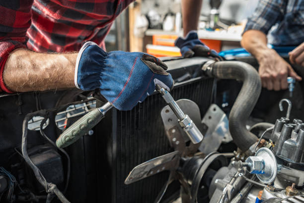

What is the pricing structure for quick auto body repairs in Garland TX?
Posted by on 2024-05-23
When it comes to getting quick auto body repairs in Garland, TX, the pricing structure can vary depending on a few factors.
First and foremost, the extent of the damage to your vehicle will play a significant role in determining the cost of repairs. Minor dents and scratches may be relatively inexpensive to fix, while more extensive damage from accidents or collisions could result in higher costs.
Additionally, the type of repair needed will also impact pricing. For example, if you simply need a paint touch-up or dent removal, that will likely be less expensive than if you require panel replacement or structural work.
Another factor to consider is the quality of materials used for the repairs. Cheaper materials may result in lower upfront costs but could lead to issues down the road. It's important to choose a reputable auto body shop that uses high-quality parts and materials for lasting results.
Lastly, labor costs will also contribute to the overall pricing structure for quick auto body repairs in Garland, TX. Skilled technicians with experience and expertise may charge higher rates for their services compared to less experienced individuals.
Overall, it's essential to get quotes from multiple auto body shops in Garland before making a decision. By comparing prices and services offered by different providers, you can ensure you're getting fair pricing for quality repairs on your vehicle.